Panduan
Daftar Shopee Merchant
Panduan lengkap langkah demi langkah untuk mendaftarkan UMKM lokal ke platform Shopee.
Lihat Program arrow_forwardKumpulan program, materi edukasi, poster, panduan, peta, template, dan video yang disusun dalam kegiatan pengabdian masyarakat.
Coba gunakan kata kunci lain atau hapus filter pencarian.
Panduan lengkap langkah demi langkah untuk mendaftarkan UMKM lokal ke platform Shopee.
Lihat Program arrow_forward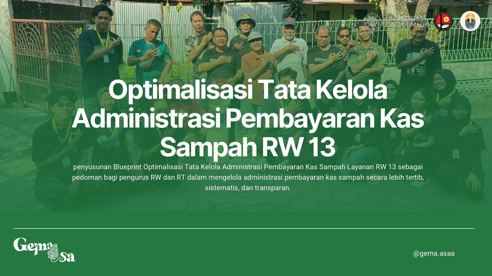
Template pencatatan keuangan bank sampah yang terstruktur untuk transparansi kas rukun warga.
Lihat Program arrow_forward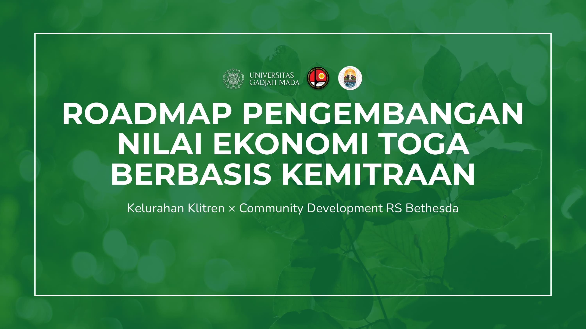
Tahapan pengembangan TOGA dari budidaya dan pengolahan hingga pemasaran berbasis kemitraan.
Lihat Program arrow_forward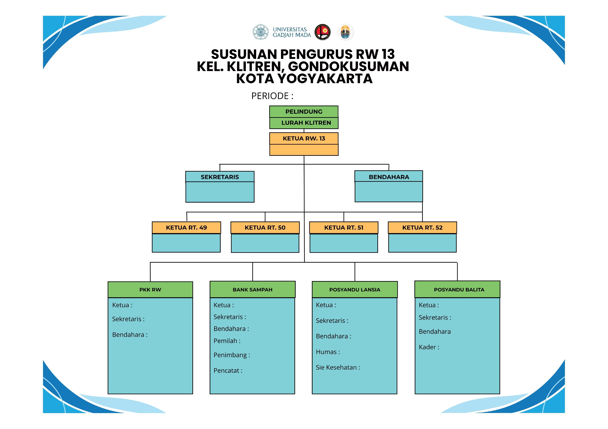
Kompilasi data demografi, sosial, dan ekonomi wilayah kelurahan yang disusun secara sistematis.
Lihat Program arrow_forward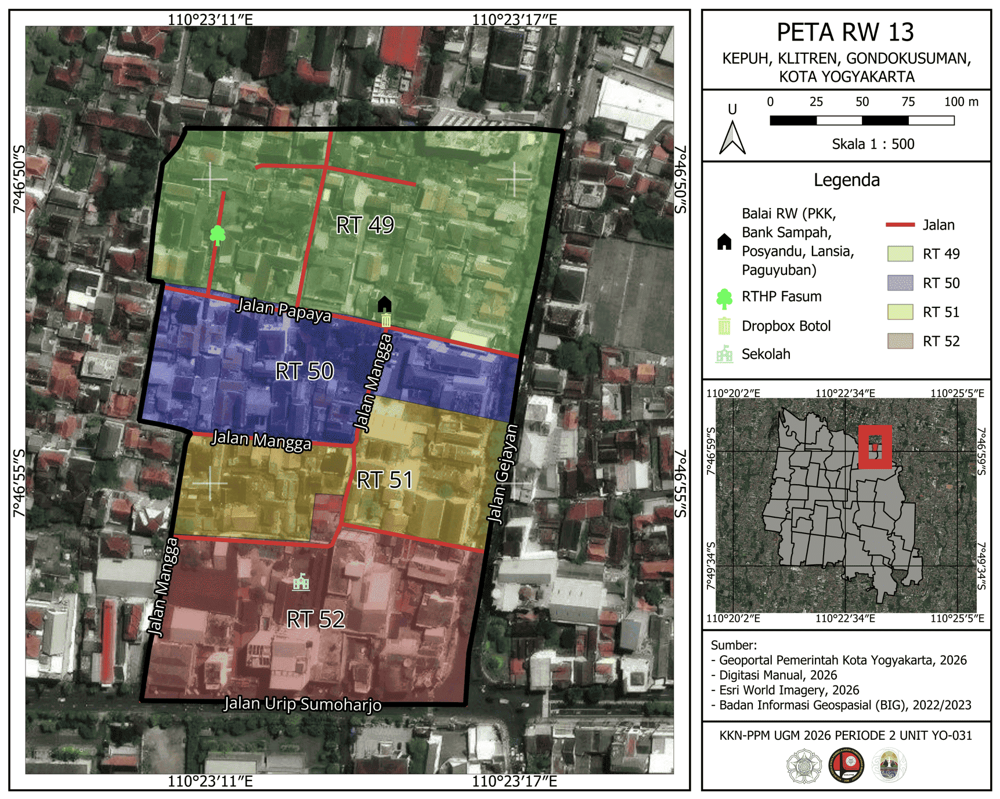
Pemetaan infrastruktur, fasilitas umum, dan batas administrasi rukun warga 13.
Lihat Program arrow_forward
Pemetaan tata ruang dan pemukiman untuk mendukung perencanaan pengembangan wilayah RW 16.
Lihat Program arrow_forward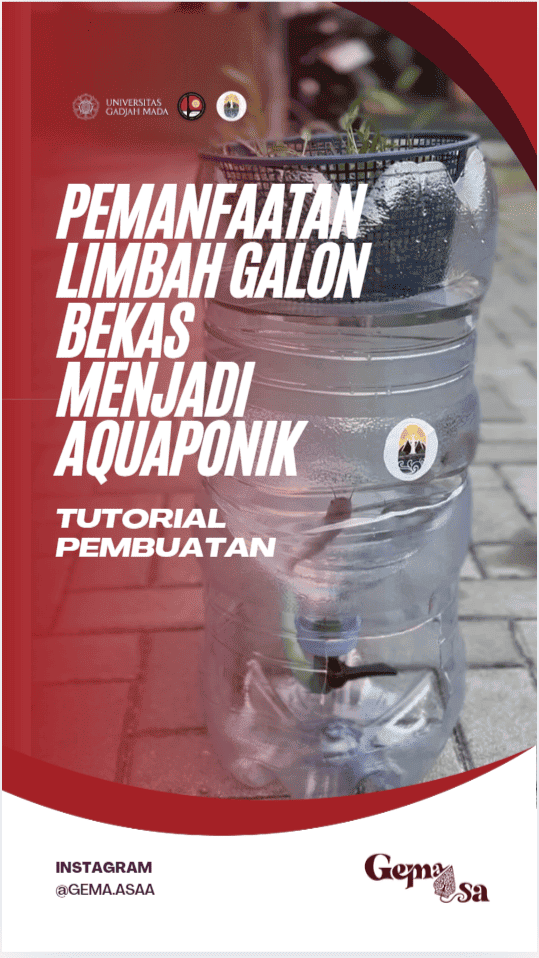
Tutorial praktis pembuatan sistem aquaponik mini memanfaatkan galon air bekas untuk ketahanan pangan keluarga di lahan sempit.
Tonton Video arrow_forward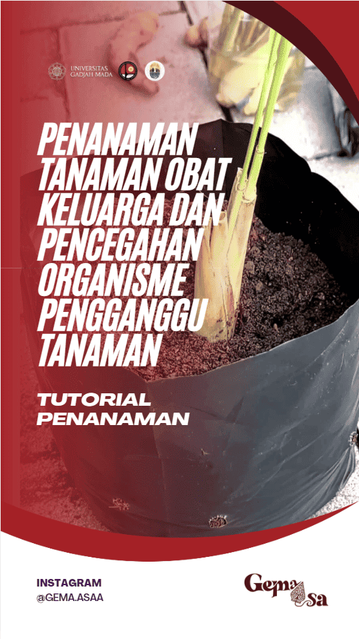
Video penanaman TOGA dan pencegahan organisme pengganggu tanaman yang mudah dipahami warga.
Lihat Program arrow_forward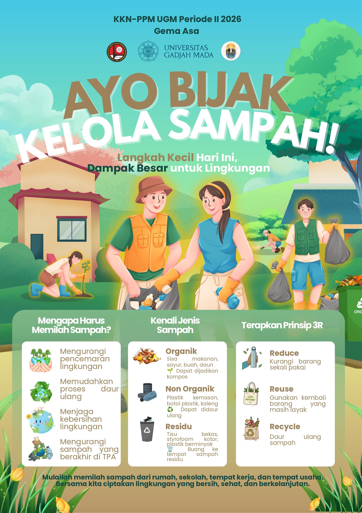
Infografis edukatif mengenai pemilahan dan pengolahan limbah sisa usaha bagi pelaku UMKM kuliner di lingkungan RW.
Lihat Program arrow_forward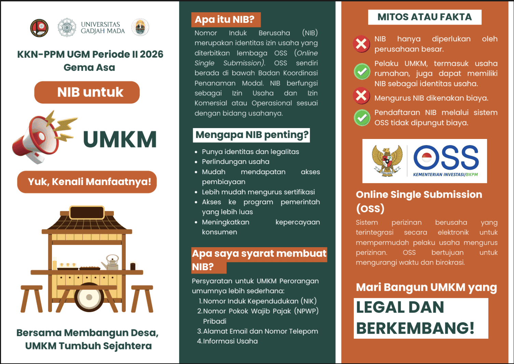
Panduan legalitas NIB dan digitalisasi usaha melalui ShopeeFood bagi pelaku UMKM.
Lihat Program arrow_forward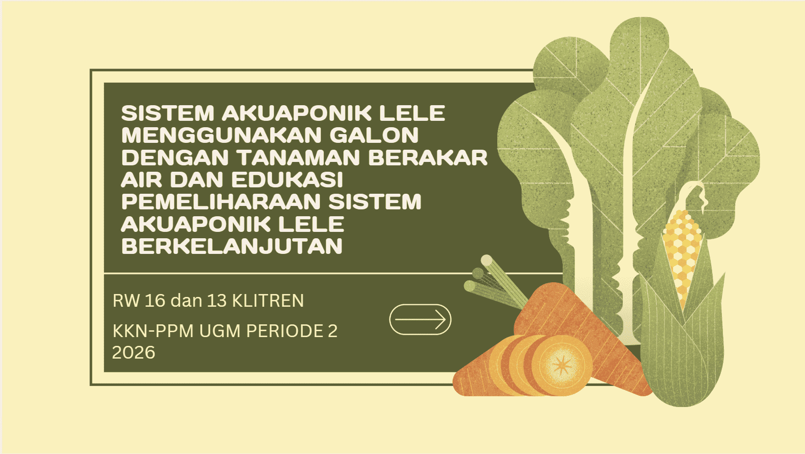
Modul petunjuk integrasi budi daya ikan lele dan sayuran hidroponik dalam satu sistem sirkulasi air.
Lihat Program arrow_forward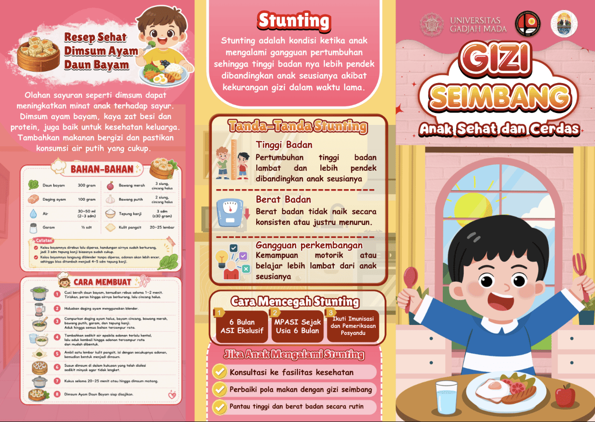
Materi penyuluhan porsi makan "Isi Piringku" untuk mencegah stunting dan menjaga kesehatan balita.
Lihat Program arrow_forward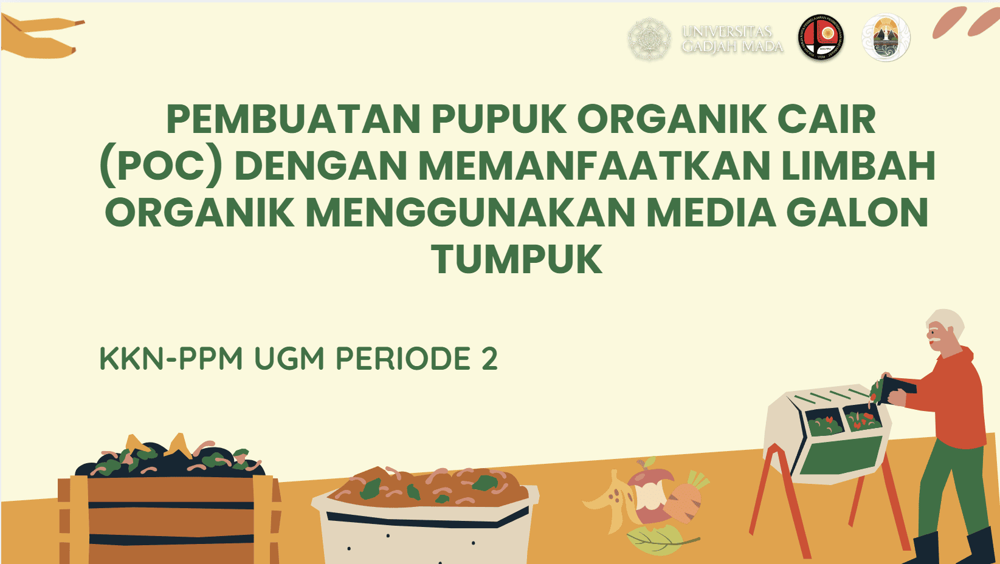
Demonstrasi pembuatan pupuk organik cair menggunakan limbah rumah tangga yang ramah lingkungan.
Tonton Video arrow_forward